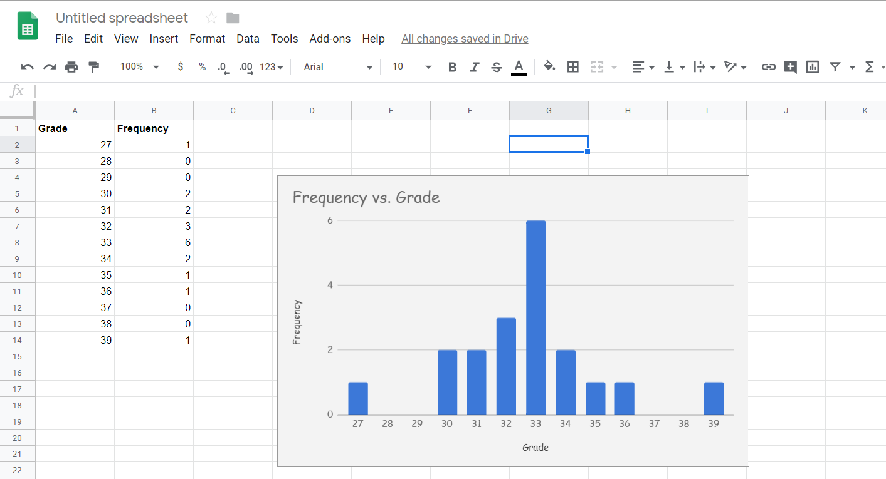

This is a chart of the homework grades of Bookworm Penguin (seen below). The x-axis is the grade (out of 50) and the y-axis is the frequency (i.e., how often that specific grade shows up).

I used Google Sheets to create this graph. Firstly, I looked at the JSON and decided to work with Bookworm Penguin's homework grades, due to a small (but not too small) amount of variance between them. I made two columns in Google Sheets: one called "Grades", which contained each number between 27 (the lowest grade) and 39 (the highest grade), even if that number had 0 occurences within the dataset. The next column, "Frequency", was a count of how many times the grade to the left appeared in the data. I then used its "Chart" feature to make this histogram.
